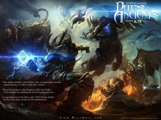
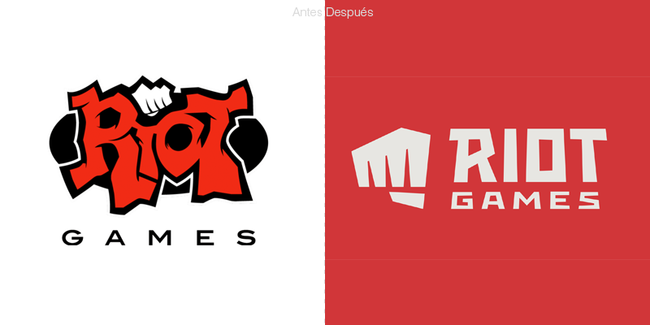

League Of Legends tambien conocido por sus siglas "LoL",es un videojuego desarrollado en 2009 distribuido de manera gratuita.
Videojuego via online-multijugador de arena de batalla generado bajo la categoría "MOBA".
El juego está basado en el popular mapa personalizado del Warcraft III, Defense of the Ancients: Allstars, DotA, el cual se inspira en el escenario de StarCraft "Aeon of Strife".
Fundada por Brandom Beck y Marc Merill.
Asociandose con Steve Feak, desarollador del antiguo mapa personalizado "Defense of the Ancients" de WarcraftIII: The Frozen Throne, y Steve Mecson, administrador de la base del grupo de apoyo oficial para el desarollo del mapa League of Legends.
Usando el DotA original creado por Eul como base, Guinsoo diseñador de "DotA All-stars" insertando su propia mezcla de contenidos, ampliando considerablemente el número de los héroes, y la adición de recetas, numerosos artículos y varios cambios de juego.
Guinsoo entonces pasó la versión 6 del mapa de DotA All-stars a un nuevo desarrollador, IceFrog. La idea de un sucesor espiritual de Defense of the Ancients que sería su propio juego independiente con su propio motor, en lugar de otro mod de Warcraft III, comenzó a materializarse a finales de 2005.
League of Legends nació "cuando un par de miembros de la comunidad de Dota muy activos creía que el juego era tan divertido y tan innovador que representaba el desove de un nuevo género y merecía ser su propio juego profesional con características significativamente mejoradas y sus alrededores- servicios de juegos.
Riot Games, compañia crada por los fundadores, abrió oficialmente su cargo en septiembre de 2006, y en la actualidad cuenta con cerca de 100 personas que trabajan en League of Legends ", incluyendo su plataforma tecnológica robusta para atender y manejar el juego, así como un equipo dedicado a las relaciones con la comunidad."
Según Marc Merrill, al crear los distintos campeones en el juego, en vez de dejar la creación de campeones a unas pocas personas, decidieron abrir el proceso de creación del campeones para todos en la compañía con base en una plantilla donde podían votar en el que campeones hicieron en el juego. El juego estaba en una beta cerrada desde el 10 de abril de 2009 al 22 de octubre de 2009. A continuación, la transición a la beta abierta hasta el lanzamiento. En marzo de 2013, Riot Games lanzó una versión beta de un cliente de OS X, además de su cliente de Windows.